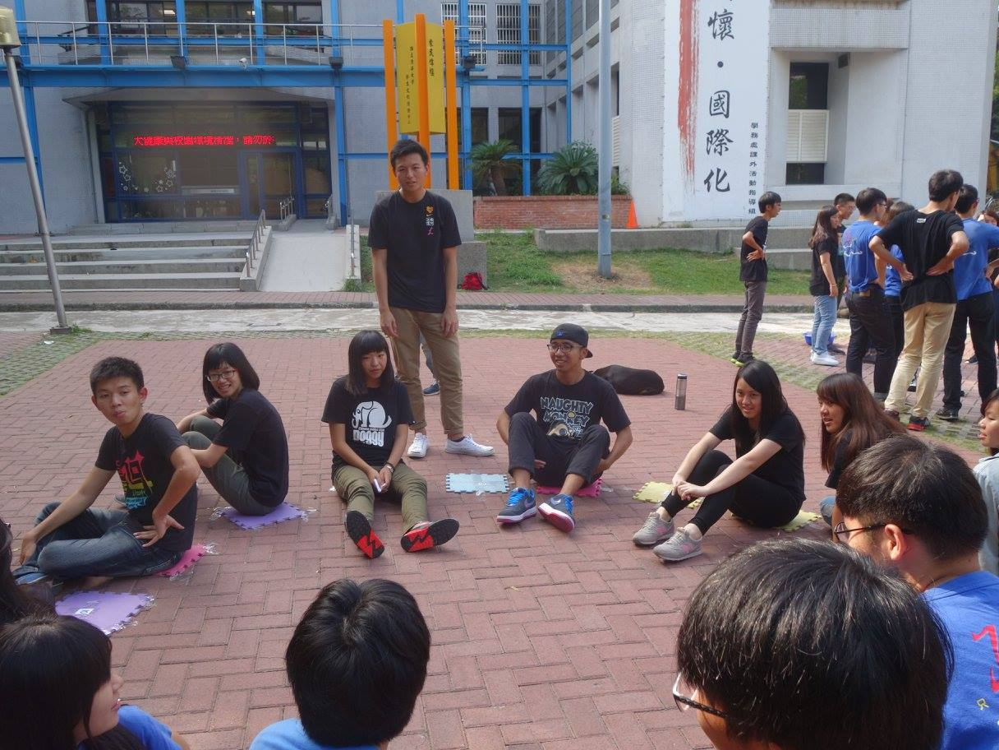
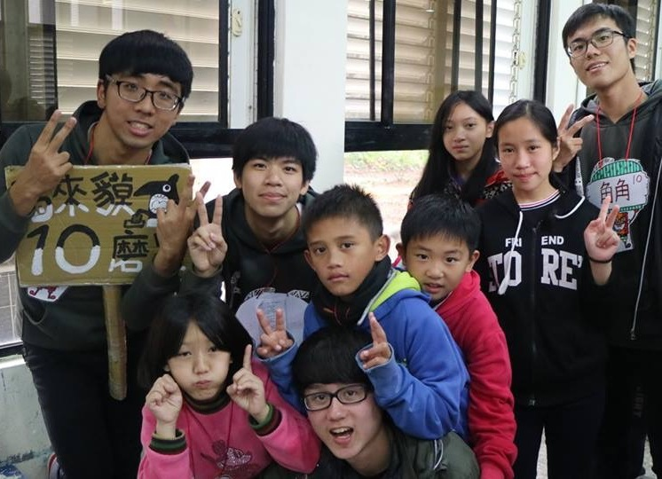
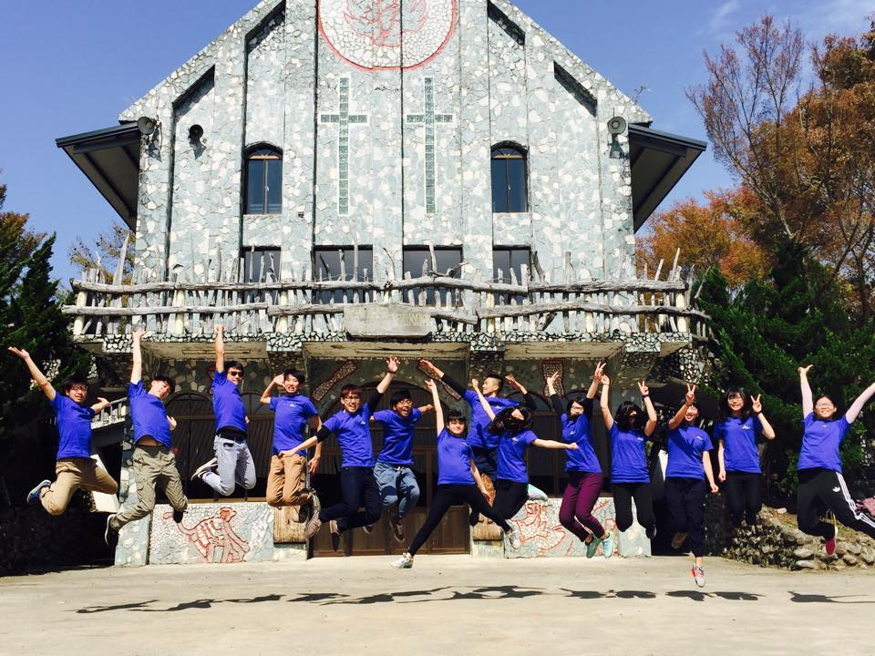
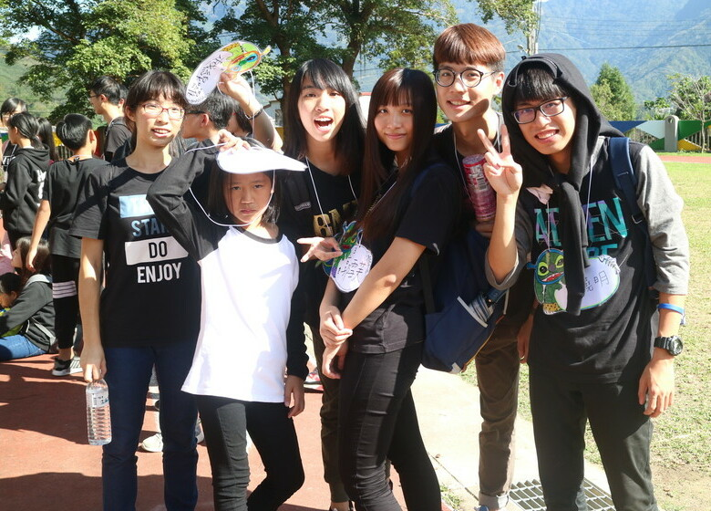
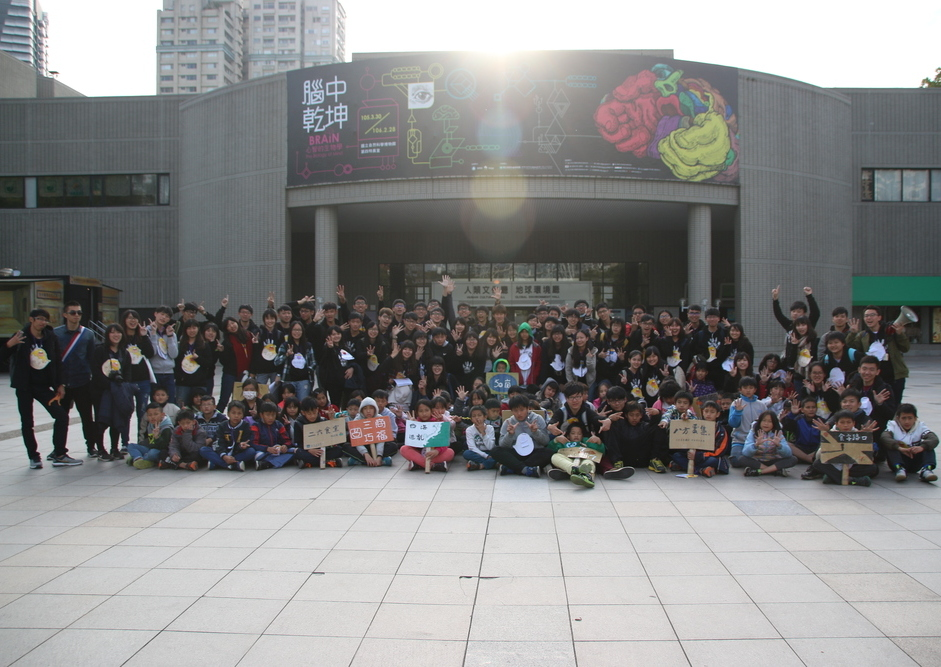
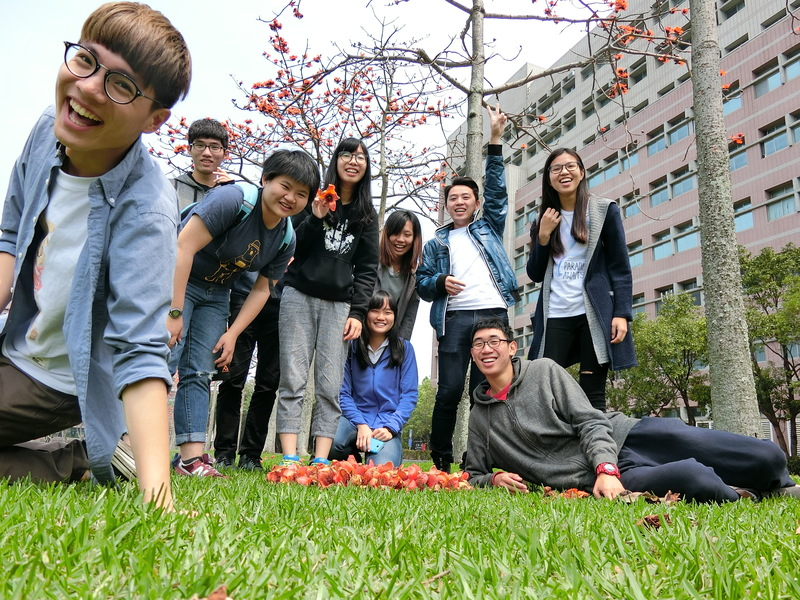
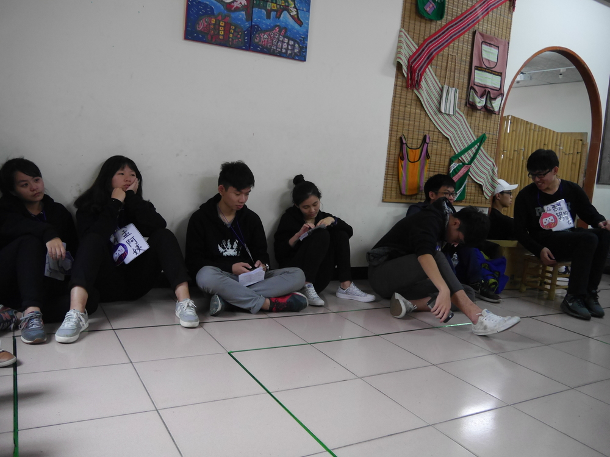
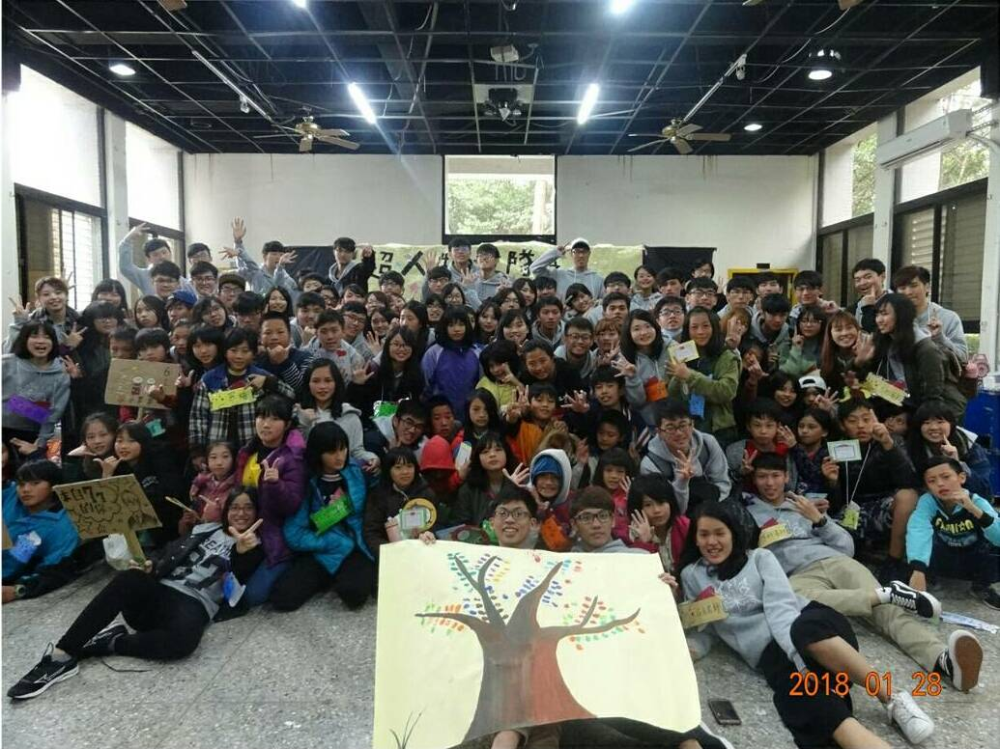

[特選北海道∼學生優惠搶購]森之精靈·星夜成功湖畔賞鯨·十八尖山雙纜車· 米其林級水木餐廳精緻套餐·風雲樓夜景俯瞰北海道
- 旅遊國家：日本
- 旅遊城市：北海道
- 旅遊天數：2年-2年半
- 出發日期：2015年10月

- 第一站
- 出發日期：2015年10月
- 原文假日營—原文營隊初體驗，享受被天真可愛的小孩控制的樂趣，當股員的感受令人驚艷！
- 住宿：新樂國小

- 第二站
- 出發日期：2016年2月
- 原文冬令營—原文營隊第二次體驗，讓您熟能生巧，精益求精！＊特別贈送驚喜小禮物：營期免費延長至4天！ 讓您一次帶營隊帶個過癮！沿途可深刻體驗18學長姐的溫柔美麗。
- 住宿：清華大學

- 第三站
- 出發日期：2016年7月
- 原文大隊上山—欣賞新竹縣尖石鄉綿延不絕、蒼蘢蓊鬱的山脈。體驗最浪漫的森之步道（長達16k-32k）， 在泰雅部落體驗最難忘的人文風情。在小隊長的導覽下，漫遊於部落的歷史迴廊。
- 注意事項：如遇颱風提早下山，將特別回饋您＊步行32k森之步道免費優惠乙次＊，歡迎您再次蒞臨！
- 住宿：泰崗部落、新光部落、司馬庫斯部落、養老部落

- 第四站
- 出發日期：2016年9月
- 原文假日營—導遊劉于瑄小姐經驗豐富，遊歷無數原文營隊。除了體驗原文營隊帶來的淋漓暢快， 還加碼贈送＊20大一股員伴遊＊絕對超值！
- 住宿：梅花國小

- 第五站
- 出發日期：2017年2月
- 原文冬令營—★★★清大活動中心百萬夜景！體驗入冬最低溫中睡袋的溫暖。享受米其林水木餐廳精緻台式合菜！ 全台前百大導遊球球小姐和20股員伴您盡情樂遊！
- 注意事項：假吵架時地板溼滑＊小心跌倒＊
- 住宿：清華大學

- 第六站
- 出發日期：2017年7月
- 原文大隊上山—＊加入即會員資格免費升級小隊長＊，再次體會32k森之步道（最知名的浪漫小徑）， 原訂櫻花季因故延期至明年二月，還請您見諒。與20小隊員享受天倫之樂，觀賞夏季滿天星斗，蜜桃園採桃去！
- 注意事項：小心電鋸
- 住宿：泰崗部落、新光部落、司馬庫斯部落、養老部落

- 第七站
- 出發日期：2017年10月
- 原文假日營—＊名額有限，僅限一名！敬請把握＊，三度體驗原文假日營，將您的食宿升級為營長規格， 超過30位玉峰國小學童將融化您的心！原文社20級、21級員工將與您同歡留下美好回憶！
- 住宿：玉峰國小

- 第八站
- 出發日期：2018年2月
- 原文冬令營—＊北海道原工旅遊最終章＊，新竹冬季低溫中，尖石鄉孩子們溫暖的笑容！高級清夜定食讓您獲得身心靈滿足 ，20級、21級原文社員工將提供您最窩心的伴遊！
- 注意事項：若您習慣早睡，不建議參加此行程。
- 住宿：清華大學